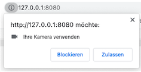

Gerätezugriffe - Kamera¶
Hint
Aktueller Stand vor Gerätezugriffe:
- Frontend
- Backend
- Collection post
- Collection post.files
- Collection post.chunks
Nun wollen wir noch auf Geräteschnittstellen zugreifen. Dazu gehören die Kamera und auch die Geolocation-API, um unseren Standort zu ermitteln. Früher war JavaScript eine "SandBox", d.h. JavaScript-Code war vollständig innerhalb des Browsers gekapselt und hatte keinerlei Zugriff nach außen. Das änderte sich mit dem Upload File-Button. JavaScript bekam (sehr eingeschränkten) Zugriff auf das Dateisystem (nur lesend). In der Zwischenzeit hat sich das komplett gewandelt. JavaScript läuft erstens auch auf Servern und hat zweitens über eine Vielzahl von APIs Zugriff auf unterschiedlichste Schnittstellen zum System. Wir wollen hier zunächst betrachten, wie JavaScript auf die Kamera zugreifen kann. Später ermitteln wir auch noch den eigenen Standort.
Anpassung der Anwendung¶
Ausgangspunkt ist dieser Stand des Projektes, den wir nach der Einführung von IndexedDB erreicht haben.
Zunächst ein bisschen mehr responsive¶
Unser HTW Insta entwickelt sich langsam. Deshalb ist hier vielleicht ein guter Zeitpunkt, um die Anwendung noch etwas mehr responsive zu gestalten.
Media Queries¶
Zum Beispiel sind die Cards stets in fester Größe, unabhängig davon, ob wir die Anwendung am Desktop betrachten oder am Mobilgerät.
Dazu können wir in unsere feed.css ein paar Media queries einfügen:
#create-post {
z-index: 1001;
position: fixed;
width: 100%;
min-height: 100vh;
overflow-y: scroll;
bottom: 0;
top: 56px;
background: white;
text-align: center;
visibility: hidden;
}
.main-image {
max-width: 100%;
margin: auto;
display: block;
}
.whiteText {
color: white;
}
.floating-button {
z-index: 1000;
position: fixed;
bottom: 0;
right: 0;
padding: 30px;
}
.input-section {
display: block;
margin: 10px auto;
}
.shared-moment-card.mdl-card {
margin: 10px auto;
width: 80%;
}
@media (min-width: 600px) {
.shared-moment-card.mdl-card {
width: 60%;
}
}
@media (min-width: 1200px) {
.shared-moment-card.mdl-card {
width: 45%;
}
}
.shared-moment-card .mdl-card__title {
height: 250px;
}
@media (min-height: 600px) {
.shared-moment-card .mdl-card__title {
height: 300px;
}
}
@media (min-height: 1200px) {
.shared-moment-card .mdl-card__title {
height: 380px;
}
}
Wir haben sowohl für die Viewport-Höhe als auch für die Viewport-Breite zwei Breakpoints eingebaut. Bei jeweils 600px bzw. 1200px ändern sich die Angaben zur Höhe bzw. Breite der Bilder in den Cards. Achtung: In feed.js muss dazu die Zeile
cardTitle.style.height = '180px';
gelöscht werden! Die Höhe und Breite der Bilder in den Cards passt sich jetzt (besser) der Viewport-Breite und -Höhe an. Bei den Breiten haben wir sogar %-Angaben verwendet (gut), bei den Höhen nur feste Pixel-Werte (nicht so gut). Sie können gerne damit herumspielen und es an Ihre Bedürfnisse anpassen. Mehr zu Media Queries finden Sie z.B. hier und hierhttps://wiki.selfhtml.org/wiki/CSS/Media_Queries.
srcset-Attribut für img¶
Die Verwendung der Bilder können wir noch auf eine andere Art responsive gestalten. Je nach Viewport-Größe können die Bilder eingebunden werden, deren Auflösung "ausreicht". In dem /public/src/images/-Ordner haben wir für unser Hauptbild oben drei verschiedene Versionen:
htw.jpg, mit der Auflösung898 x 343Pixel,htw-lg.jpg, mit der Auflösung1199 x 457Pixel undhtw-sm.jpg, mit der Auflösung480 x 183Pixel.
Es wäre unsinnig, beisielsweise das htw-lg.jp auf einem schmalen Viewport anzuzeigen, da dafür die Auflösung des htw-sm.lpg völlig genügt. Da Letzteres auch noch deutlich kleiner ist (43 KB), als das htw-lg.jpg-Bild (170 KB), ließe sich auch die Ladezeit verringern, wenn für mobile Geräte das kleiner Bild verwendet würde. Auf der anderen Seite sieht dieses Bild aufgrund seiner niedrigen Auflösung in großen Viewports (also am Desktop-Monitor) nicht gut aus. Dort benötigen wir das htw-lg.jpg. Um diesen Wechsel der Bilder je nach Viewport-Größe zu vereinfachen, wurde in HTML5 für das img-Element das Attribut srcset hinzugefügt (siehe z.B. hier oder hier). In unserer index.html können wir also das Einbinden des img-Elementes wie folgt erweitern:
88 89 90 91 | |
Zuvor stand dort einfach nur: <img src="/src/images/htw.jpg" alt="HTW Wilhelminenhof" class="main-image">. Wir haben also das srcset-Attribut hinzugefügt. Das generelle Template dafür sieht so aus:
<img srcset="url size,
url size,
url size"
src="default url" >
Das heißt, nach den URLs auf die jeweiligen Bilder schreiben wir noch die Größe des Viewports, ab denen die Bilder verwendet werden sollen, also 1200w, 900w, 480w. Dabei steht w für width. Möglich wäre auch noch, dass man statt w ein x angibt und dann die Anzahl der Pixel verwendet für die Viewportgröße. Das Laden der unterschiedlichen Images kann in den DeveloperTools unter Network beobachtet werden.
Animationen¶
Wenn wir auf der Hauptseite auf den +-Button klicken, dann "erscheint" das Formular zur Dateneingabe einfach. Das liegt daran, dass wir in der feed.js bei den Funktionen openCreatePostModal() und closeCreatePostModal() die Sichtbarkeit einfach an- und ausschalten. Wir könnten das aber auch etwas "netter" durch eine Animation gestalten. Dazu verwenden wir translateY und transition. translateY() verschiebt ein Element in y-Richtung (also rauf oder runter) und transition kann eine Zeit übergeben werden, die angibt, wie lange der Wechsel von Werten einer Eigenschaft dauern soll - also eine Animation.
In der feed.ccs ändern wir für die id=create-post:
1 2 3 4 5 6 7 8 9 10 11 12 13 14 15 | |
Die Zeile 11 kann natürlich ganz raus. In der feed.js ändern wir für die beiden Methoden:
1 2 3 4 5 6 7 | |
und danach "slided" das Formular von unten nach oben ein. vH ist eine Einheit in Relation zum Viewport. 100vH ist die gesamte Viewporthöhe, 1vH ist der 100te Teil der Viewporthöhe (siehe z.B. hier).
Wir wollen nun die Kamera verwenden, um Bilder aufzunehmen. Außerdem wollen wir einen titel und eine location eingeben können und alles zusammen als Post versenden.
Einen Post an das Backend senden¶
Um die eingegebenen Daten zu senden, wollen wir den Speichern-Button aus der index.html
76 77 78 | |
mit der feed.js verbinden. Dazu definieren wir uns zunächst mithilfe von jQuery weitere Variablen für den direkten Zugriff auf Stuerelemente. Wir erweiteren die feed.js um die hervorgehobenen Zeilen:
1 2 3 4 5 6 7 | |
Nun können wir einfacher auf das submit-Ereignis des Speichern-Buttons reagieren. Wir melden dazu das Formular an den Ereignislistener für das submit-Ereignis in der feed.js an:
79 80 81 82 83 84 85 86 87 88 | |
Wir verhindern zunächst das Standardverhalten beim submit-Ereignis, nämlich das Absenden der Daten und das Neuladen der Seite (Zeile 80). In Zeile 82 prüfen wir, ob beide input-Elemente, also sowohl für title, als auch für location einen Wert enthalten. Die JavaScript-trim()-Funktionen entfernt "Leerzeichen" aller Art am Ende des Strings (auch Tabs, Zeilenumbrüche etc.). Sollte eines der beiden (oder beide) Eingabefelder leer sein, beenden wir die Funktion mit einem alert und bleiben in dem Formular. alert ist natürlich nicht so toll, ein toast wäre viel besser, aber wir haben in unserer index.html nur einen toast für das erfolgreiche Speichern vordefiniert. Wenn beide Eingabefelder befüllt sind, wird das Formularfenster verlassen.
Um die Daten an das Backend zu senden, verwenden wir die fetch()-Funktion und die POST-Methode. Hätten wir nur Textdaten, die wir übertragen wollen, könnten wir ein einfaches JSON senden (und wieder empfangen). Die fetch()-Funktion könnte dann so aussehen:
fetch('http://localhost:3000/posts', {
method: 'POST',
headers: {
'Content-Type': 'application/json',
'Accept': 'application/json',
},
body: JSON.stringify({
title: titleInput.value,
location: locationInput.value,
image_id: '',
})
})
.then( response => {
console.log('Data sent to backend ...', response);
return response.json();
})
.then( data => {
console.log('data ...', data);
updateUI(Object.entries(data));
});
Wir versenden jedoch form-data. Dazu erstellen wir ein FormData-Objekt (siehe FormData). Wir fügen dazu eine Funktion sendDataToBackend() in die feed.js ein und rufen diese für die Behandlung des submit-Ereignisses auf:
79 80 81 82 83 84 85 86 87 88 89 90 91 92 93 94 95 96 97 98 99 100 101 102 103 104 105 106 107 108 109 110 111 112 113 114 115 116 117 118 119 120 121 122 123 124 | |
In dieser Funktion werden mehrere Variablen verwendet, die in der feed.js deklariert werden müssen:
13 14 15 16 | |
Wir sehen, dass die Werte der Variablen titleValue und locationValue durch das submit-Ereignisses des Eingabeformulars (des Speichern-Buttons) gesetzt werden (siehe oben feed.js Zeilen 120 und 121). Die Werte der Variablen file und imageURI erhalten wir jedoch erst, wenn wir ein Foto mit der Kamera aufnehmen. Das schauen wir uns im Folgenden an:
Aufnehmen von Fotos¶
In der feed.js haben wir den Wert von image_id zunächst noch leer gelassen. Wir wollen nun die Kamera anbinden und damit ein Foto aufnehmen, das wir mitversenden. Dazu erweiteren wir die Anwendung zunächst, um neben title und location auch noch ein drittes Eingabefeld für die Bilder zu erhalten.
Dazu erweiteren wir zunächst die public/index.html:
65 66 67 68 69 70 71 72 73 74 75 76 77 78 79 80 81 82 83 84 85 86 87 88 89 90 91 92 93 94 95 96 97 98 99 100 101 | |
Das <video>- (Zeile 67) und das <canvas>-Element (Zeile 68) werden verwendet, um mit der Kamera Bilder aufzunehmen, die mit dem <button> (Zeile 69) gespeichert werden. Der image-picker (Zeilen 70-73) wird benötigt, falls das Gerät über keine Kamera (oder keinen Kamerazugriff) verfügt. Außerdem fügen wir noch eine weitere Eingabesection für die Location hinzu mit einem Button und einem spinner, der anzeigen soll, dass etwas passiert. Diese Eingabesection haben wir aber zunächst auskommentiert, da wir diese erst beim Thema Geo-Location verwenden.
Wir verwenden die CSS-Klassen und -Ids auch noch, um die Eingabe etwas "schöner" aussehen zu lassen und erweiteren dazu die feed.css:
1 2 3 4 5 6 7 8 9 10 11 12 13 14 15 16 17 18 19 20 21 22 23 24 25 26 27 28 29 30 31 32 33 34 35 | |
Die CSS-Definitionen sorgen insbesondere dafür, dass das Video- , Canvas- und File-Picker-Element zunächst versteckt ist.
Wir wollen uns zunächst darum kümmern, ein Live-Bild der Kamera in das Canvas-Element zu integrieren, d.h. wir kümmern uns zunächst um den Kamerazugriff.
Kamera-Zugriff¶
Für den Kamerazugriff benötigen wir etwas JavaScript-Code. Wir erweitern die feed.js. Zunächst vereinfachen wir die Zugriffe auf die einzelnen Elemente und fügen eine Funktion hinzu, mit der wir den Zugriff auf die Kamera prüfen und herstellen wollen:
1 2 3 4 5 6 7 8 9 10 11 12 13 14 15 16 17 18 19 20 21 22 23 24 25 | |
In der neuen Funktion initializeMedia() wollen wir die MediaDevices-API verwenden. Ein Blick in die Dokumentation dieser API zeigt, dass die Browser-Unterstützung noch nicht besonders gut ist, zumindest für einige der Methoden darin. Wir wollen aber insbesondere die getUserMedia()-Funktion verwenden und dafür ist die Browser-Unterstützung wiederum doch sehr gut (Chrom, Firefox, Edge und alle mobilen Geräte).
Für den Fall, dass die MediaDevices-API nicht unterstützt werden, erstellen wir uns im navigator ein eigenes mediaDevices-Objekt und prüfen, ob die getUserMedia()-Funktion unterstützt wird. Wenn dies nicht der Fall ist, erstellen wir uns für das neue mediaDevices-Objekt eine neue Eigenschaft getUserDevices und definieren es als eine Funktion. Diese Funktion nutzt dann alte Funktionen, die in den jeweiligen Browsern angeboten wurden (und werden). Wie gesagt, das ist nur ein Fallback für den Fall, dass ein Browser verwendet wird, der die getUserMedia()-Funktion in der MediaDevices-API nicht unterstützt (was, wie wir oben erläutert haben, nur noch selten der Fall ist). Wir erweitern für diesen seltenen Fall die initializeMedia()-Funktion:
14 15 16 17 18 19 20 21 22 23 24 25 26 27 28 29 30 31 32 | |
Wenn also die MediaDevices-API nicht unterstützt wird (Zeile 15), dann erstellen wir einen eigenes MediaDevices-Objekt (Zeile 16). Für dieses eigene MediaDevices-Objekt erstellen wir eine getUserMedia()-Funktion (Zeile 20). Diese Funktion gibt eine Promise zurück. Entweder, eine Promise mit dem Zustand rejected (Zeile 24), nämlich genau dann, wenn der Browser auch nicht die alten Funktionen webkitUserMedia und mozGetUserMedia unterstützt. Dann können wir wirklich nichts mehr machen. Oder die Promise verwendet eine der beiden Funktionen und gibt die Promise nach Anwendung zurück - kann natürlich trotzdem noch sein, dass sie rejected wird, aber vielleicht auch resolved. Jedenfalls bezieht sich dieser gesamte Code auf den Fall, dass getUserMedia() in navigator.mediaDevices nicht unterstützt wird. Es handelt sich bei diesem Code um ein sogenanntes Polyfill.
Wir kümmern uns jetzt darum, tatsächlich Zugriff zur Kamera zu bekommen. Das kann nun entweder über die moderne getUserMedia()-Funktion aus navigator.mediaDevices geschehen oder über das Polyfill unter Verwendung von webkitGetUserMedia() oder mozGetUserMedia(). Nur für den Fall, dass wir keinen Zugriff auf die Kamera erhalten, wollen wir den File-Picker verwenden, um eine Bilddatei hochzuladen.
14 15 16 17 18 19 20 21 22 23 24 25 26 27 28 29 30 31 32 33 34 35 36 37 38 39 40 41 | |
Ab Zeile 32 können wir auf jeden Fall auf die getUserMedia()-Funktion zugreifen und genau das tun wir auch in Zeile 33. Dieser Funktion wird ein JavaScript-Objekt übergeben. Dieses Objekt hat zwei Eigenschaften: video und audio. Beide sind auf false gesetzt, wir können sie jedoch mit true einschalten und erledigen das für video ebefalls in Zeile 33. Diese Funktion gibt eine promise zurück. Im resolve-Fall erhalten wir einen Video- und/oder Audio-Stream. Wir verwenden diesen stream als Quelle für unseren Videplayer (der aufgrund der Funktion autoplay den Stream sofort anzeigt). Wir setzen dafür den Videoplayer auf sichtbar - display: 'block'.
Der reject-Fall der Promise kann verschiedene Gründe haben. Ein Grund wäre, wie oben erläutert, dass wir selbst mit dem Polyfill keinen Zugriff auf die Kamera bekommen. Ein anderer wäre, dass unser Gerät gar nicht mit einer Kamera verbunden ist und ein dritter Fall wäre, dass der Zugriff auf die Kamera von der Nutzerin blockiert wird. Wenn die getUserMedia()-Funktion das erste Mal aufgerufen wird, erfolgt eine Abfrage, ob der Zugriff auf die Kamera zugelassen oder blockiert wird:

Die Entscheidung lässt sich auch nachträglich ändern, indem man auf das i links neben der URL klickt. Wenn Sie die Anwendung ausführen und den Zugriff auf die Kamera erlauben, wird das Video sofort angezeigt.

Wird die Promise rejected, soll die gesamte imagePickerArea (wieder) auf display: 'block' gesetzt werden. In der Funktion closeCreatePostModal() setzen wir die Video- und File-Picker-Elemente ebenaflls alle (wieder) auf display: 'block'.
48 49 50 51 52 53 | |
Wird der Zugriff auf die Kamera blockiert, wird stattdessen der File-Picker angezeigt:

Das Click-Ereignis des Foto-Buttons behandeln¶
Nun wollen wir den Foto-Button implementieren, damit wir ein Foto von dem Kamerastream erzeugen können. Dazu implementieren wir für diesen Button die Behandlung des click-Ereignisses:
43 44 45 46 47 48 49 50 51 52 53 54 55 56 57 58 59 60 61 62 63 64 | |
Die Grundidee dabei ist die, dass wir das ktuelle Bild des videoPlayers in unser canvasElement einfügen, das canvasElement sichtbar gestalten, den videoPlayer unsichtbar (und den Button dann auch gleich noch) und außerdem den Videoplayer stoppen.
Das Canvas-Element verfügt über einen Grafikkontext, den wir in Zeile 48 als 2d auswählen. Siehe dazu auch HTMLCanvasElement.getContext(). Für diesen context rufen wir die drawImage()-Funktion auf (siehe CanvasRenderingContext2D.drawImage()).
- der erste Parameter der
drawImage()-Funktion ist das Bild. Wir übergeben dazu denvideoPlayer. - der zweite und dritte Parameter ist die Koordinate des linken oberen Punktes innerhalb des Canvas-Elementes, hier
x=0undy= 0. - der dritte Parameter gibt die Breite des Bildes an. Wir nehmen hier die gesamte Breite des Canvas-Elementes.
- der vierte Parameter gibt die Höhe des Bildes an. Da wir der Breite einen festen Wert zugewiesen haben (die Canvas-Breite), müssen wir die Höhe in Abhängigkeit der Relation des Videos berechnen.
Wenn wir dieses Bild erstellt haben, können wir den Videoplayer stoppen. Die Funktion getVideoTracks() gibt ein Array allerlaufenden Streams auf der Webseite zurück. Wir laufen durch dieses Array mithilfe der forEach-Schleife (Zeile 50) und stoppen alle laufenden Streams (Zeile 51).
Wenn wir nun den Foto-Button klicken, sehen wir das (Stand-)Bild im canvasElement, der videoPlayer und der Button sind unsichtbar und der videoPlayer ist gestoppt.
Bild in base64 umwandeln¶
Das canvas-Element (siehe HTMLCanvasElement aus der Canvas-API) besitzt eine Funktion toDataURL(), die ein Bild im angegebenen Format zurückgibt (siehe HTMLCanvasElement.toDataURL()). Wir geben an, dass das Bild im image/jpg-Format zurückgegeben werden soll (siehe Zeile 53). Es wird ein base64-String erzeugt, den wir in der globalen Variablen imageURI speichern.
File-Objekt erzeugen¶
Wir verfügen nun über eine Data-URL (siehe Data URLs) unseres Bildes. Mit dieser Data-URL können wir mithilfe der fetch()-Funktion ein File-Objekt erzeugen. Wir weisen unserem File-Objekt den Dateinamen myFile.jpg zu. Die Referenz auf dieses File-Objekt speichern wir in der globalen Variablen file (siehe Zeilen 56-63).
Speichern des Bildes im Backend¶
Nun können wir bereits Fotos aufnehmen und diese speichern. Wenn wir nun die Funktion sendDataToBackend() aufrufen, werden die title-, location- und file-Werte als FormData an das Backend gesendet. Schauen wir uns dazu die sendDataToBackend()-Funktion nochmals genauer an:
115 116 117 118 119 120 121 122 123 124 125 126 127 128 129 130 131 132 133 134 135 136 137 138 139 140 | |
Mithilfe der fetch()-Funktion werden die formData an das Backend gesendet. Wir erhalten den neu angelegten Datensatz zurück, z.B.:
{
"title": "Eingang",
"location": "Tor WH",
"image_id": "1652973765918-jf-htwbild4.jpg",
"_id": "628660c55619a5a107acb19d",
"__v": 0
}
Wir wollen den neuen Post sofort in unserer Anwendung anzeigen. Dazu rufen wir die updateUI()-Funktion auf und übergeben den neuen Datensatz als Array (die Funktion updateUI() erwartet ein Array). Allerdings erwarten wir ja eigentlich für die Eigenschaft image_id einen base64-String. Allerdings gibt uns die POST-Anfrage an das Backend nicht diesen String zurück, sondern den Dateinamen des Bildes in der Datenbank. Dazu haben wir uns aber den base64-String in imageURI gespeichert und verwenden ihn nun bei dem Datensatz, der an die updateUI()-Funktion übergeben wird.
Das war es schon, wir können nun die Daten an das Backend senden. Zum Testen nehmen Sie ein Foto auf, geben einen Titel und eine Location ein und klicken den Speichern-Button. Dann landnet - hoffentlich - alles im Backend.
Für den Fall, dass die Kamera nicht zur Verfügung steht oder die MediaDevices-API oder der Kamerazugriff blockiert wurde, muss das Hochladen einer Bilddatei über das input-Element vom Typ file implementiert werden. Dazu wird das change-Event des Upload-Buttons behandelt:
Bilddatei hochladen¶
Das Hochladen einer Bilddatei kennen wir ja bereits von unserem anderen Frontend. Hier ist nun auch schon alles vorbereitet und wir müssen in der feed.js nur noch das change-Event für den upload-Button behandeln. Das sieht im Prinzip genau so aus, wie die Umwandlung des Canvas-Bildes, nur dass picture hier die hochgeladene Datei ist:
104 105 106 | |
Letzte Verbesserungen¶
Ein Nachteil in unserer Anwendung ist noch, dass die Kamera die ganze Zeit läuft, wenn wir einmal den modalen Dialog zur Eingabe von daten geöffnet hatten. Wir sollten sie beim Ausschalten des modalen Dialoges schließen. Das Stoppen aller Videostreams hatten wir bereits für die Aufnahme des Fotos gemacht. Weil jedoch das Schließen und erneutes Öffnen der Kamera sehr ressourcenverbrauchend ist, laufen die Animationen für das Öffnen und Schließen des modalen Dialogs nicht mehr flüssig. Wir lagern diese Animationen deshalb in einen asynchronen "Thread" aus (ist nicht wirklich ein neuer Thread):
80 81 82 83 84 85 86 87 88 89 90 91 92 93 94 95 96 97 | |
Mithilfe des timeout-"Tricks" wird der modale Dialog fließend geschlossen und das Kamerazeichen im Tab des Browsers schließt asynchron etwas später.
Success
Wir können nun Fotos mit der Kamera aufnehmen und die Bilder als Post an das Backend senden, wo es in die Datenbank gespeichert wird!